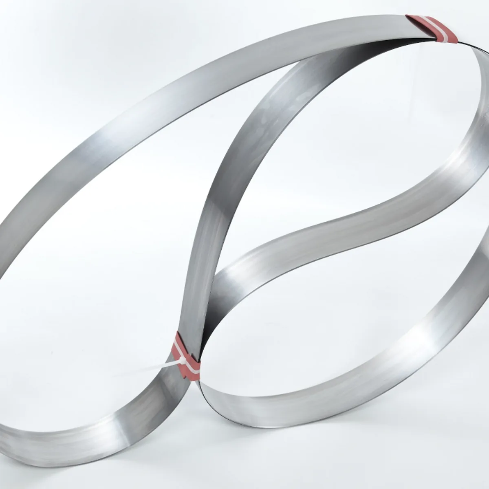
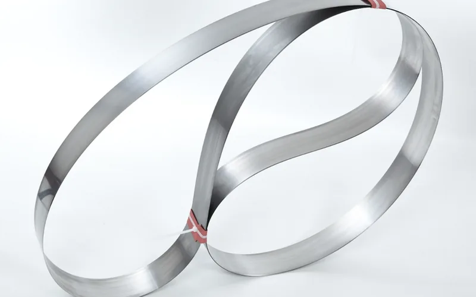
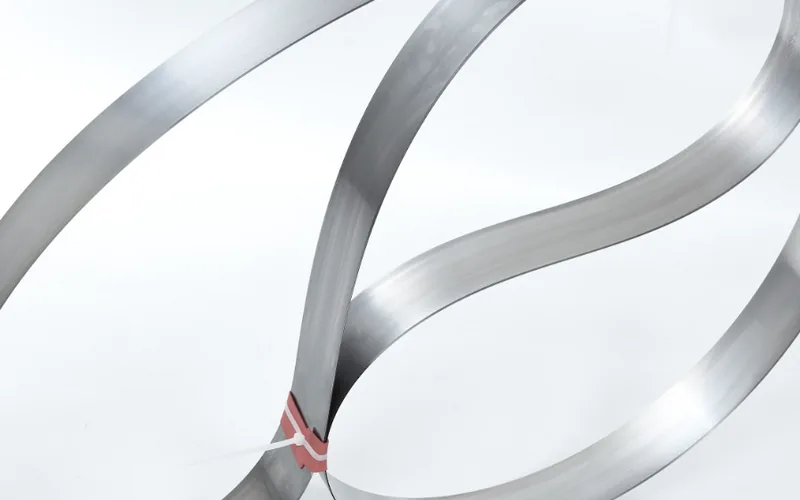

Band
Knives
Precision splitting band knives for the leather industry — long blades for tannery hide splitting and short blades for shoe and leather-goods machines. European steel, ground faces and edges, pre-bevelled, and made to measure for your machine.

Tighter Tolerances
Faces ground to a constant thickness around the whole blade hold a tighter splitting tolerance — more even thickness across the hide, higher surface yield and less material lost as waste.
Longer Blade Life
Ground edges keep the blade running perfectly straight with no oscillation. On automatic-sharpening machines it is called to the wheels less often — fewer blade changes and lower consumption.
Matched To Your Machine
Every blade is built to the length, width, thickness and hardness of your splitting machine and leather — pre-bevelled to cut set-up time, and made to measure when a standard size won't do.
The Heart of the
Splitting Machine
A band knife is an endless steel blade that runs continuously on the flywheels of a splitting machine. As the leather is fed against it, the blade splits the hide horizontally to a uniform thickness — separating the grain layer from the flesh layer and bringing the leather down to the substance the next operation needs.
It is the single most important consumable on the machine. The straightness of the blade and the constancy of its thickness decide the splitting tolerance, the surface yield and how much leather is lost as waste. The right steel also matters: it is chosen for how it behaves with the state of the leather — pelt, wet blue, crust or dry — the type of splitting, and the grinding wheels used to sharpen it.
For Big & Small
Splitting Machines
Whether you split whole hides on a large tannery machine or work skins on a small shoe and leather-goods splitter, we supply the right band knife — cut, ground and finished to your machine.

Tannery Splitting Band Knives
Long endless blades for splitting whole hides on large tannery splitting machines, with manual or automatic continuous feeding.

Shoe & Leather-Goods Band Knives
Short blades for splitting and skiving on small shoe and leather-goods machines — ground on both faces and edges for straight, mark-free running.
The Right Bevel for
Each Leather State
The bevel is ground to the state of the leather being split. As a practical starting point — always within your machine maker's recommended angle — these are the bevel lengths above and below the blade.
The bevel should sit in the heart of the thickness and be left scratched, not polished. Start the bevel gently — grinding too fast or with the wrong wheel contact overheats the steel and alters its structure, costing you cutting performance. Keep the grinding wheels dressed so they never load up. On dry leather keep the bevel short, as a longer bevel takes strength out of the cut.
Your Questions,
Answered
What is a band knife for a leather splitting machine?
An endless steel blade that runs on the flywheels of a splitting machine. As the hide is fed against it, the blade splits the leather horizontally to a uniform thickness, separating the grain from the flesh layer. Its precision and straightness decide the splitting tolerance, the surface yield and the amount of waste.
What is the difference between blades for big and small machines?
Large tannery machines that split whole hides take long blades — about 6,000 to 15,000 mm long, 70–115 mm wide and 0.80–1.20 mm thick. Small shoe and leather-goods machines take short blades — about 2,000 to 6,000 mm long, 40–60 mm wide and 0.40–1.00 mm thick. We supply both.
Why are ground faces and edges important?
Grinding both faces gives a constant thickness around the whole blade, so the splitting tolerance is tighter, less material is wasted, the hide feeds faster and blade changes are quicker. Ground edges keep the blade straight so it runs without oscillation — meaning less re-sharpening and longer blade life.
What bevel should I grind for wet blue, pelt or dry leather?
As a guide: wet blue about 5 mm top and 3 mm underneath; pelt (limed) about 6 mm top and 4 mm underneath; dry about 3.5 mm top and 2.5 mm underneath. Keep the bevel in the heart of the thickness, scratched not polished, and always within your machine maker's recommended angle.
Can you produce band knives to a custom size?
Yes. Beyond the standard width-and-thickness combinations we produce blades to your exact length, width, thickness and hardness. If the band knife you need does not exist, we make it to measure — tell us your machine and leather type and we'll recommend the steel and specification.
How should band knives be stored and handled?
Keep them in their protective box and remove one at a time. Clean and degrease without knocking the blade, mount on perfectly ground flywheels with the blade guides in good condition, and never over- or under-tension it. Don't bend the welded joint, and run the blade unloaded for a few minutes after mounting before setting the sharpening.
Send Your Request
Tell us your splitting machine, the blade length, width and thickness, and the leather you split — we'll come back with the right band knife, the right steel and a clear lead time. If your blade doesn't exist, we make it to measure.